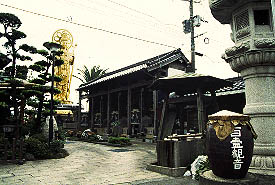

百壷観音/佐賀県鳥栖市
九州の大動脈、国道3号線は福岡〜熊本間だけでも福岡大仏、久留米大観音、日輪寺のおびんずる様と九州を代表するスター大仏＆大観音がいて、なかなか油断できない。
この区間、大仏街道と言っても良いのではなかろうか。
また、太宰府にある観世音寺などは12〜１３世紀につくられた3体の5メートル級の木彫菩薩像をはじめとしたデカイ仏像が揃っており、これなんかも感覚としては「大仏」である。
このように一軍揃いの「大仏ロード」だが、二軍も負けてはいない。
・・・鳥栖市内を走行中、偶然見つけた光景。

写真が見にくくて恐縮だが、壁には壷がずら〜っと並んでいる。金色の「中観音」（5メートル位）が立ち、見れば「百壷観音」となっている。
うひゃ〜、何じゃこりゃあ。もちろん車を停め見に行く。
敷地内には金色やブロンズの観音像が並んでいる。一番奥に金色の「中観音」がおわすという塩梅だ。
ここは寺院ではなく道場のような雰囲気で、私が訪れた時は誰もいなかったので詳しい事はわからず仕舞いだった。
・・・百壷って一体何だろうという疑問が湧いて来た。
1メートル程の壷は恐らく百個あるのだろう。布で蓋をされており、中身は何だか分からなかった。
もしかしたら百観音の写し霊場なのではなかろうか。だとすれば壷の中身は各霊場のお砂か、もしかしたら各霊場の本尊の仏像だったりして・・・ヒエ〜
2000.7.
珍寺大道場 HOME